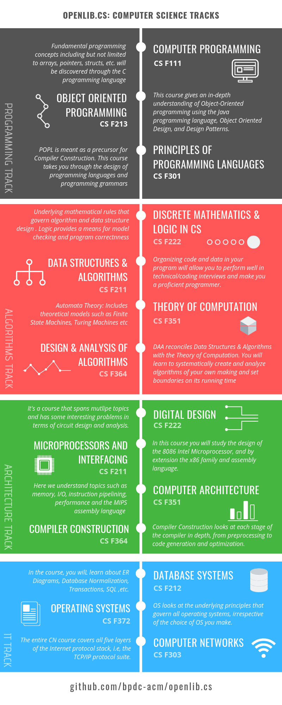

OpenLib.cs
OpenLib.cs is a collaborative project to make textbooks, references, solution manuals and other resources freely available for students who are currently pursuing the following courses (or their equivalents) at university. As an open project, any member of the community can contribute his/her share to build an index of computer science references across the web.
Course Navigation
1st Year Courses
2nd Year Courses
- Data Structures & Algorithms
- Database Systems
- Object Oriented Programming
- Logic in Computer Science
- Digital Design
- Discrete Structures for Computer Science
- Microprocessors & Interfacing
3rd Year Courses
- Principles of Programming Languages
- Computer Networks
- Computer Architecture
- Theory of Computation
- Compiler Construction
- Design & Analysis of Algorithms
- Operating Systems
Electives
Computer Science
Data Science
- Artificial Intelligence
- Data Mining
- Machine Learning
- Foundations of Data Science
- Deep Learning
- Probability & Statistics
Usage
- A directory is maintained for each course within which is a README that provides information regarding the course. The README may have the following sections if applicable :
- Prerequisites - Courses that need to be completed prior to attempting the particular course
- Textbooks - List of textbooks with links to their soft copies
- Code - Implementation of course concepts
- Videos - List of links of video explanations of course concepts
- Websites - Useful websites
- Articles - Cheat-sheets, tutorials, blog-posts etc.
- Communities - Online forums related to the course concepts
- Apps - Mobile apps that may enrich the learning experience
- There are also scripts that provide certain useful features (WIP)
Guidelines
- This repository provides links to the required study material such as textbooks, solution manuals and reference books.
- Copies of the study material can be borrowed from the library while appearing for open-book exams. Moreover, printouts of the same can also be taken into the exam hall if required. Written notes are also allowed.

Communities
Videos
General Reference
Source Code
We do not condone plagiarism. Use these for reference.
- kelvindecosta/undergrad
- Mohammed-Shoaib/WhatsAlgo
- Mohammed-Shoaib/Coding-Problems
- dontbeadouche
- cricksmaidiene/CPrograms
- cricksmaidiene/algorithms-repository
Contributing
- Kindly see the guidelines before contributing to this repo.
- You can also contribute by sharing! :relaxed:
- Share this list with your batchmates, friends or anyone just interested in Computer Science! :hearts:
- By connecting more people with information, you are doing everyone a HUGE favor.